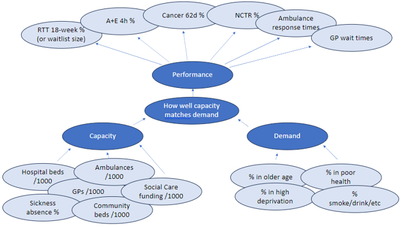
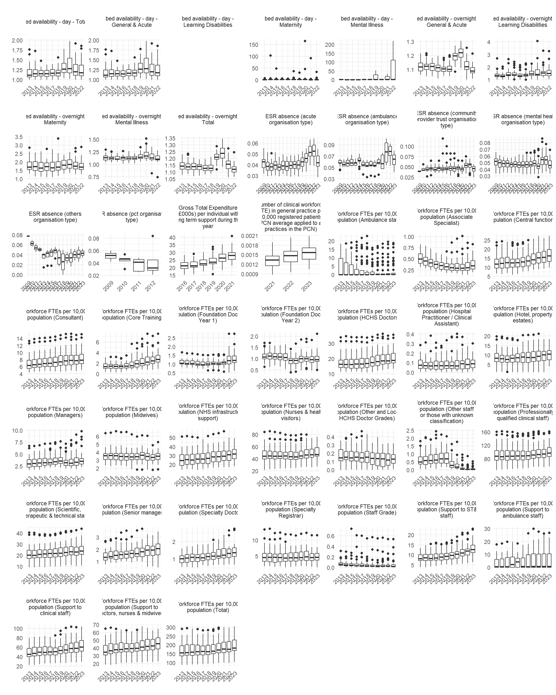

| domain | metric |
|---|---|
| Capacity | ESR absence (acute organisation type) |
| Capacity | ESR absence (ambulance organisation type) |
| Capacity | ESR absence (community provider trust organisation type) |
| Capacity | ESR absence (mental health organisation type) |
| Capacity | ESR absence (others organisation type) |
| Capacity | ESR absence (pct organisation type) |
| Capacity | Gross Total Expenditure (£000s) per individual with long term support during the year |
| Capacity | Number of clinical workforce (FTE) in general practice per 10,000 registered patients (PCN average applied to all practices in the PCN) |
| Capacity | Workforce FTEs per 10,000 population (Ambulance staff) |
| Capacity | Workforce FTEs per 10,000 population (Associate Specialist) |
| Capacity | Workforce FTEs per 10,000 population (Central functions) |
| Capacity | Workforce FTEs per 10,000 population (Consultant) |
| Capacity | Workforce FTEs per 10,000 population (Core Training) |
| Capacity | Workforce FTEs per 10,000 population (Foundation Doctor Year 1) |
| Capacity | Workforce FTEs per 10,000 population (Foundation Doctor Year 2) |
| Capacity | Workforce FTEs per 10,000 population (HCHS Doctors) |
| Capacity | Workforce FTEs per 10,000 population (Hospital Practitioner / Clinical Assistant) |
| Capacity | Workforce FTEs per 10,000 population (Hotel, property & estates) |
| Capacity | Workforce FTEs per 10,000 population (Managers) |
| Capacity | Workforce FTEs per 10,000 population (Midwives) |
| Capacity | Workforce FTEs per 10,000 population (NHS infrastructure support) |
| Capacity | Workforce FTEs per 10,000 population (Nurses & health visitors) |
| Capacity | Workforce FTEs per 10,000 population (Other and Local HCHS Doctor Grades) |
| Capacity | Workforce FTEs per 10,000 population (Other staff or those with unknown classification) |
| Capacity | Workforce FTEs per 10,000 population (Professionally qualified clinical staff) |
| Capacity | Workforce FTEs per 10,000 population (Scientific, therapeutic & technical staff) |
| Capacity | Workforce FTEs per 10,000 population (Senior managers) |
| Capacity | Workforce FTEs per 10,000 population (Specialty Doctor) |
| Capacity | Workforce FTEs per 10,000 population (Specialty Registrar) |
| Capacity | Workforce FTEs per 10,000 population (Staff Grade) |
| Capacity | Workforce FTEs per 10,000 population (Support to ST&T staff) |
| Capacity | Workforce FTEs per 10,000 population (Support to ambulance staff) |
| Capacity | Workforce FTEs per 10,000 population (Support to clinical staff) |
| Capacity | Workforce FTEs per 10,000 population (Support to doctors, nurses & midwives) |
| Capacity | Workforce FTEs per 10,000 population (Total) |
| Capacity | bed availability - day - General & Acute |
| Capacity | bed availability - day - Learning Disabilities |
| Capacity | bed availability - day - Maternity |
| Capacity | bed availability - day - Mental Illness |
| Capacity | bed availability - day - Total |
| Capacity | bed availability - overnight - General & Acute |
| Capacity | bed availability - overnight - Learning Disabilities |
| Capacity | bed availability - overnight - Maternity |
| Capacity | bed availability - overnight - Mental Illness |
| Capacity | bed availability - overnight - Total |
| Demand | % active smokers (GPPS) |
| Demand | % former smokers (GPPS) |
| Demand | Atrial fibrillation: QOF prevalence (all ages) |
| Demand | CVD-PP: QOF prevalence (30-74 yrs) - retired after 2019/20 |
| Demand | Depression: QOF prevalence (18+ yrs) |
| Demand | Estimated prevalence of common mental disorders: % of population aged 16 & over |
| Demand | Estimated prevalence of common mental disorders: % of population aged 65 & over |
| Demand | Hypertension: QOF prevalence (all ages) |
| Demand | Last BP reading of patients (80+ yrs, with hypertension), in the last 12 months is <= 150/90 mmHg (denominator incl. PCAs) |
| Demand | Last BP reading of patients (<80 yrs, with hypertension), in the last 12 months is <= 140/90 mmHg (denominator incl. PCAs) |
| Demand | Learning disability: QOF prevalence (all ages) |
| Demand | Mental Health: QOF prevalence (all ages) |
| Demand | Obesity: QOF prevalence (18+ yrs) |
| Demand | Patients (aged 45+ yrs), who have a record of blood pressure in the last 5 yrs (denominator incl. PCAs) |
| Demand | Proportion of population in age band (0-9) |
| Demand | Proportion of population in age band (10-19) |
| Demand | Proportion of population in age band (20-29) |
| Demand | Proportion of population in age band (30-39) |
| Demand | Proportion of population in age band (40-49) |
| Demand | Proportion of population in age band (50-59) |
| Demand | Proportion of population in age band (60-69) |
| Demand | Proportion of population in age band (70-79) |
| Demand | Proportion of population in age band (80-89) |
| Demand | Proportion of population in age band (90+) |
| Demand | Proportion of resident population in national deprivation quintile (Average deprived) - IMD 2019 |
| Demand | Proportion of resident population in national deprivation quintile (Least deprived quintile) - IMD 2019 |
| Demand | Proportion of resident population in national deprivation quintile (Most deprived) - IMD 2019 |
| Demand | Proportion of resident population in national deprivation quintile (Second least deprived) - IMD 2019 |
| Demand | Proportion of resident population in national deprivation quintile (Second most deprived ) - IMD 2019 |
| Demand | Reception prevalence of overweight (including obesity) |
| Demand | Reception: Prevalence of overweight (including obesity) |
| Demand | Record of offer of support and treatment in the last 24 months for smokers aged 15+ yrs (denominator incl. PCAs) |
| Demand | Smoking Prevalence in adults (18+) - current smokers (APS) |
| Demand | Smoking cessation support and treatment offered to patients with certain conditions (denominator incl. PCAs) |
| Demand | Smoking status at time of delivery |
| Demand | Smoking status of patients with certain conditions recorded in the last 12 months (denominator incl. PCAs) |
| Demand | Smoking: QOF prevalence (15+ yrs) |
| Demand | Year 6 prevalence of overweight (including obesity) |
| Demand | Year 6: Prevalence of overweight (including obesity) |
| Demand | new hypertension patients, aged 30-74, with a CV risk assessment >= 20% treated with statins (denominator incl. PCAs) - retired after 2019/20 |
| Performance | 62 Day Wait - Consultant Ref (proportion within standard) |
| Performance | 62 Day Wait - GP Referral (proportion within standard) |
| Performance | 62 Day Wait - Screening Ref (proportion within standard) |
| Performance | Average daily proportion of patients who no longer meet the criteria to reside that remain in hospital |
| Performance | Mean ambulance response time (C1) |
| Performance | Mean ambulance response time (C1T) |
| Performance | Mean ambulance response time (C2) |
| Performance | Mean ambulance response time (C3) |
| Performance | Mean ambulance response time (C4) |
| Performance | Proportion of A&E attendances greater than 4 hours (Total attendances) |
| Performance | Proportion of A&E attendances greater than 4 hours (Type 1 Departments - Major A&E) |
| Performance | Proportion of A&E attendances greater than 4 hours (Type 2 Departments - Single Specialty) |
| Performance | Proportion of A&E attendances greater than 4 hours (Type 3 Departments - Other A&E/Minor Injury Unit) |
| Performance | Proportion of attended appointments (0 to 1 weeks wait time) |
| Performance | Proportion of attended appointments (1 to 2 weeks wait time) |
| Performance | Proportion of attended appointments (2 to 3 weeks wait time) |
| Performance | Proportion of attended appointments (3 to 4 weeks wait time) |
| Performance | Proportion of attended appointments (Over 4 weeks wait time) |
| Performance | Proportion of completed pathways greater than 18 weeks from referral (admitted) |
| Performance | Proportion of completed pathways greater than 18 weeks from referral (not admitted) |
Demand and Capacity metrics and associations with performance
Introduction and aims
The aims of this project are to use publicly available data to find associations between performance within Integrated Care Systems, and different demand and capacity metrics.
The strong associations can then be explored as to whether there are actions that can be taken to improve performance.
Project aims
A summary of the aims of the project (which will need refining over time!):
- Identify associations between metrics that affect performance
- Enable long term decision making
- Forecast future performance based on different scenarios
- Open source and reproducible code
Data description
An approximate model of how demand and capacity metrics can be seen below:

Challenges
There are some challenges in standardising the publicly available data. Data are published for different geographies, at different frequencies, for different time periods.
Geographies pose the biggest challenge. The aim of this project is to predict performance at ICB geography from the input metrics. The input metrics are published at geographies and locations such as provider trust (including different sites within trusts), STP, CCG, PCT, ICB, Region, Local Authority. Within a metric, the geography can change over time - for example, reporting at CCG changes to ICB when CCGs were abolished.
The next geography challenge is how data published at a smaller geography gets assigned to a larger geography. A simple example is for NHS Provider Trusts. The simple method is to assign the Trust the ICB that the Trust is located within. Undoubtedly, the Trust will be treating patients that reside outside the ICB it is located in, so policies created externally to the Trust will be having an effect on its performance (DISCUSSIONAL POINT).
Frequencies pose a different challenge. Data for the metrics used are published for different frequencies. These are daily, monthly, quarterly and annually (both calendar and financial years). As the modelling is at a high level with the aim to inform long-term planning performing the modelling at an annual basis is optimum. Generally, aggregating higher frequency metrics is a simple process of summing the numerator and the denominator, and then recalculating the metric. For some metrics this is more complicated. For example, the “No Criteria to Reside” metric, which publishes daily figures, provides information on the number of patients in each trust each day that no longer meet the criteria to reside (denominator), and of those patients, the number that remain in hospital (numerator). Aggregating this information up to annual figures by ICB will lose lots of the variation and detail that the daily figures provide, and potentially reduce their usefulness to the modelling.
Finally, time periods provide a challenge. Some metrics begin and end at different times, which makes it more difficult to be able to use them to predict into the future.
Data description
The metrics collated for the project are described in the table below:
The frequencies these metrics have been collected at are displayed below:

For the annual metric (financial and calendar year), these are the number of record we have for each year (this is related to the geography the metric is published at):

Sense check data
The following plots help to understand the data distribution over the years to sense check each year is consistent with previous years.
